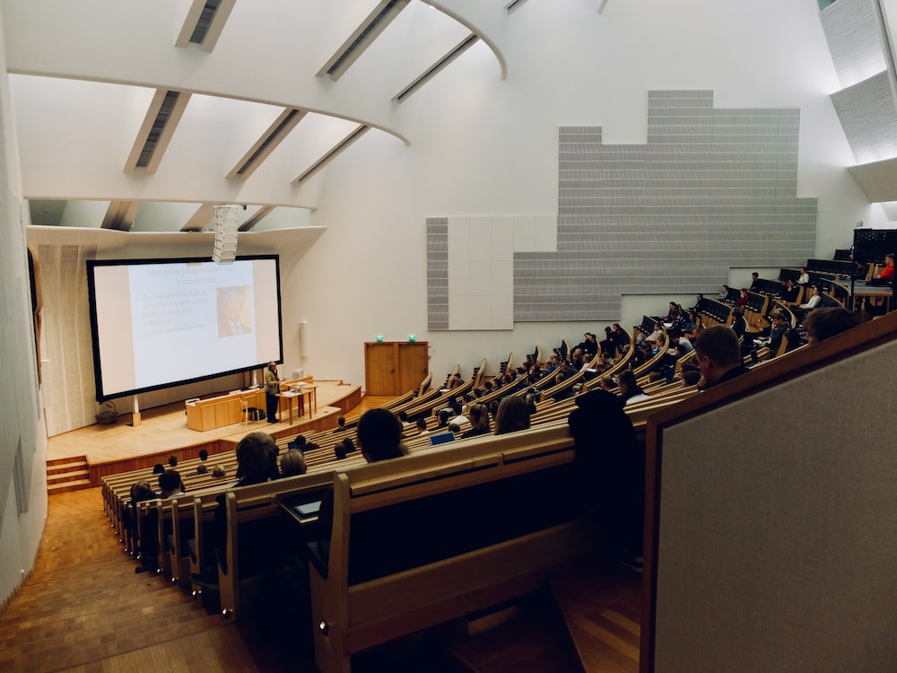

Welcome to College Of Engineering, a premier institution for technical education. Our mission is to provide students with the knowledge and skills they need to succeed in their careers, while also fostering a love of learning and a commitment to service. Founded in 2004, our college has a long history of academic excellence and innovation, and we are proud to be a leader in the field of engineering education.
Department
At Engineering College, we offer a wide range of engineering programs to suit every student's interests and career goals. Our departments include:
Computer Science Engineering
Electrical Engineering
Mechanical Engineering
Civil Engineering
BioTechnology Engineering
AIDS Engineering

Faculty
Our faculty members are experts in their fields, and are dedicated to providing students with the highest quality education possible. They are passionate about teaching and research, and are committed to helping students achieve their goals.
Dr. John Smith - Head of Department, Computer Science Engineering
Dr. Jane Doe - Associate Professor, Electrical Engineering
Dr. Robert Johnson - Professor, Mechanical Engineering
Dr. Sarah Lee - Assistant Professor, AIDS Engineering
Dr. Michael Brown - Professor, BioTechnology Engineering
Research
At Engineering College, we are committed to advancing the field of engineering through cutting-edge research and innovation. Our faculty members and students are actively involved in a wide range of research projects, including:
Developing new materials for use in construction and manufacturing
Designing more efficient energy systems
Creating new software and algorithms for use in computer science and artificial intelligence
Exploring new methods for environmental remediation and pollution control
Placement
We are proud of our placement record, with many of our graduates going on to successful careers in top companies and organizations around the world. Our placement cell works closely with students to help them find the best job opportunities, and provides support and guidance throughout the job search process.
Contact Us
If you have any questions or would like more information about Engineering College, please don't hesitate to get in touch. Our contact information is: